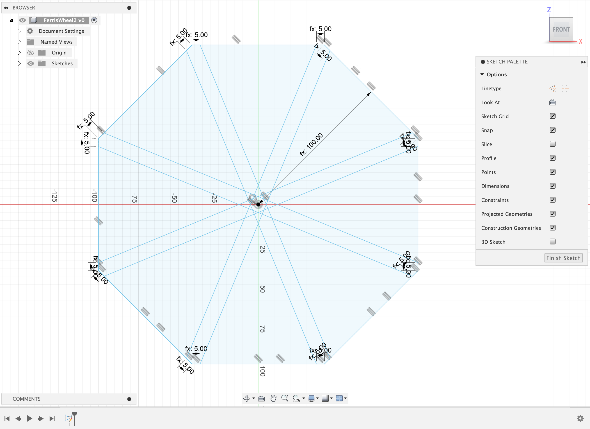

Week 03
My Ideas
This week, I started with a bit too complicated of a design! I was interested in how we can create subtle movements with laser cutting & working with motors,
and so I decided to start looking into my second project idea - a latte art machine!
I was hoping to create a machine that could simulate the pouring of milk into a coffee cup with little "wiggle" motions.
There are many movements involved in making latte art, so I was hoping to start by just doing one of them. I started by watching a multitude of Youtube videos about latte art, trying to mathematically understand and calculate what motions are necessary.
In particular, I really enjoyed this video!
Despite watching so many videos and drawing tons of ideas on paper, I was truly struggling to visualize how I could create a kinetic sculpture that could do these types of motions.
After many drawings that did and did not make it to Fusion, I had a much better idea: start simple & grow in complexity!
After realizing that I could and should start with simpler motions before diving into a complicated one, I decided that I wanted to recreate a miniature ferris wheel.
This ferris wheel is a bit inspired by my favorite one back at home (photo below of the 145 foot tall one). I figured that this project would allow me for a gentler way to learn how to connect motors with laser cutting, & to test out the different machines that we have learned!
My Ferris Wheel Iteration #1:
The Process
I decided to start by modeling the ferris wheel completely in Fusion, including both wheel-sides connect with cylinders. I quickly realized that in order to truly understand how to create movement in the wheels that I would need to stop drawing & modeling and start printing ASAP. I decided to print out my first iteration in cardboard, as I expected to encounter many mistakes. This was a good call! I began by creating the wheel design in Fusion, as well as legs and a small buffer circle to print. I used an inscribed polygon & series of parameters (of guesses for sizing) for creating the design of the wheel. I then used guiding lines to create rectangles tangent to the polygon so that I could cut out sections of the polygon.
After creating the basic foundations in Fusion, I came into the lab and worked to print on the laser cutter. Before I did so, I searched the lab to see if I could find a cylinder that would be able to be used to help the wheel turn, and I was able to find a convenient plastic cylinder to use. I measured it using calipers to see that it was 7.9mm, so I added holes into the wheels, buffers, and stands so that the cylinder could fit through them. I then printed! I was incredibly happy with how the first print turned out, and it also helped me to realize that certain pieces would be better to be cut in thicker materials. In particular, the buffers between the stand, the motor, and the wheel fell apart quite quickly. I recut just those pieces in wood, but I hope to update the ferris wheel to be entirely wood soon!

With a few pieces in hand, it became much easier to visualize how to connect the motor and to create the spinning motion! I decided to setup the wheel with masking tape as a way of testing quickly.
By holding the cylinder in my hand and rotating it, I was confident that I could make a few more "permanent" changes and create a holder for the motor.
With the wheel setup, I practiced by taping the motor to the cylinder directly, yet I quickly realized that I needed a way to hold the motor's shaft more securely. Thus, in Fusion, I created a holder for the motor that I could connect with glue to the other pieces of the project. See a photo of my design in Fusion and my original approach to holding the motor:
After creating the motor holder, I used the scraps from printing the wheel to create a stand to hold the motor in place in addition to using the new piece. It was at this point that I decided that I would use the hot glue gun to secure my wheel. When I update the wheel to be made with wood, I'll likely try to use screws instead, as the turning motion caused the glue to come undone occasionally. After I secured the wheel together with the motor in the proper place, I realized that I never cut the cylinder between the wheels to be shorter. Thus, it was awkwardly sticking out. I decided to test my experience with the tools that we learned to use the power saw to cut the piece, except I made the mistake of not taking apart the whole wheel and trying to strongly hold it. This caused the wheel to essentially tear itself apart, but I was able to salvage it and snap the cylinder in half into a more appropriate size. It then had a sharp edge, so I placed pink masking tape to avoid the sharp edge. At this point, the wheel was functional, yet it didn't look like a ferris wheel! Lastly, I used some scraps and cut them into the shape of seats, decorating them with colorful masking tape. Next time, I'll definitely want to make the wheel and seats more aesthetically pleasing, and I'd also like to make seats that do not turn upside-down with the wheel. I am looking forward to continuing to iterate, but for now, here is my Week 3 Project!